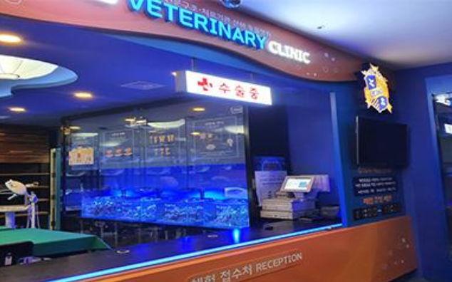

hospital

♠ 프로그램 소개 ♠
해양동물 배 속에서 발견된 것은?!
해양쓰레기로 상처받은 해양동물을 치료해주세요!
♠ 프로그램 상세내용 ♠
외과적 손씻기 : 수술실 들어가기 전 가장 기본적인 준비! 솔을 이용한 외과적 손씻기 방법!
수술실 체험 : 구조된 해양동물의 상태를 확인하고 치료해주세요!
기생충 관찰 : 해양동물의 몸에서 나온 기생충을 관찰해봐요!
처방과 조제 : 수술을 마친 해양동물을 위한 약을 처방하고 조제해주세요!
※ 체험에 사용하는 약은 섭취하시지 마시기 바랍니다.
※ 체험가능 연령 : 5세 이상
♠ 요금안내 ♠
7,000원